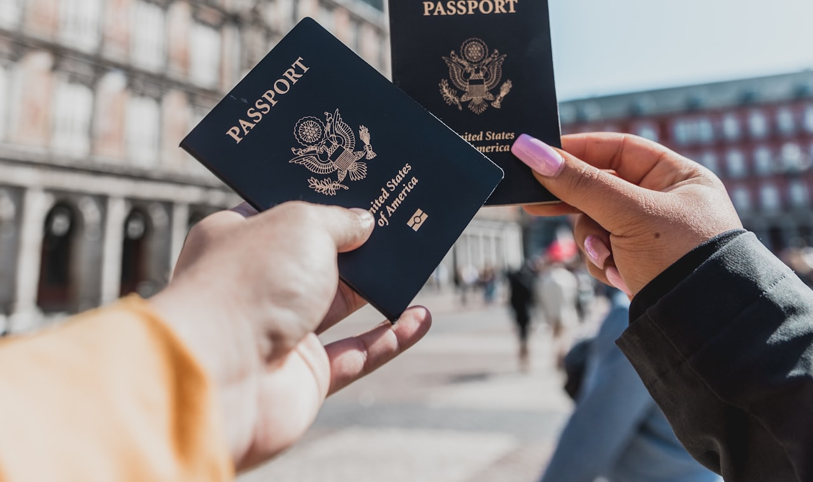

ТОП стран для карты россиянам в 2026: где проще и надёжнее
Семь стран, где россиянин реально откроет зарубежную карту в 2026: где пустят без ВНЖ, где нужен личный визит, сколько стоит и кому что подойдёт. Со сводной таблицей и чек-листом.
Зарубежная карта в 2026 году для многих россиян — не роскошь, а рабочий инструмент: оплата подписок, бронирование отелей, покупки на иностранных сайтах, поездки. Вот только стран, где карту реально открыть, осталось не так много, и у каждой свои подводные камни. Разбираем семь самых популярных направлений и честно сравниваем их по ключевым критериям.
Сразу важная оговорка: банки регулярно меняют требования к нерезидентам. То, что работало вчера, сегодня может потребовать новый документ или личное присутствие. Все цифры ниже — типичные ориентиры, а не гарантия. Финальные условия всегда уточняйте на сайте конкретного банка перед поездкой.
По каким критериям сравниваем
Чтобы выбор был осознанным, оцениваем каждую страну по семи фильтрам:
- Нужен ли ВНЖ или местная регистрация — самый частый стоп-фактор.
- Удалённо или только лично — можно ли обойтись без поездки.
- Сложность процедуры — сколько документов и нервов потребуется.
- Стоимость и сроки — от чего зависит цена вопроса.
- Поддержка Visa/Mastercard — работают ли карты за рубежом.
- Надёжность — устойчивость банковской системы.
- Нюансы — то, о чём узнают уже на месте.

Краткий разбор по странам
Казахстан
Долго был направлением №1 за счёт близости и языка. Для открытия счёта обычно нужен ИИН — индивидуальный идентификационный номер, который оформляют в ЦОН по приезде. Часть банков работает с нерезидентами без ВНЖ, но требования ужесточились: некоторые отделения просят подтвердить связь со страной. Карты Visa/Mastercard выпускаются, система зрелая. Минус — повышенное внимание к нерезидентам и риск блокировки при «неактивном» использовании счёта.
Армения
Один из самых дружелюбных вариантов: ряд банков по-прежнему открывает счёт нерезидентам-россиянам по загранпаспорту, и ВНЖ при этом часто не обязателен. Но в 2025–2026 годах требования заметно ужесточились — на практике большинство банков при личном визите просят подтвердить связь со страной: нотариальный договор аренды (обычно от 3–6 месяцев), трудовой договор, регистрацию ИП или соцкарту; ВНЖ выступает лишь одной из равноценных альтернатив. Полностью дистанционно, без личной идентификации, счёт открыть нельзя. Есть русскоязычный сервис, Visa/Mastercard поддерживаются, но круг лояльных банков сузился, а для нерезидентов встречаются требования минимального остатка.
Кыргызстан
Недооценённое направление с лояльными условиями. Открытие обычно по загранпаспорту, иногда нужен местный ИНН. Visa/Mastercard выпускают, пороги входа невысокие, процедура простая. Минус — банковская инфраструктура менее развита, чем в Казахстане или ОАЭ, поэтому устойчивость конкретного банка стоит проверять заранее.
Грузия
Исторически удобная страна, но за последние годы банки заметно ужесточили комплаенс к россиянам: участились отказы и долгие проверки. Если одобрят — получаете надёжный счёт в устойчивой системе и нормальные Visa/Mastercard. Готовьтесь к тому, что решение может затянуться, а пакет документов — расшириться: запросят подтверждение доходов и цель пребывания.
Сербия
Европейское по духу направление вне ЕС. Вопреки расхожему мнению, местный идентификационный номер для нерезидента обычно не обязателен: как правило, достаточно загранпаспорта (гражданам РФ — дополнительно внутреннего паспорта) и подтверждения адреса проживания. Отдельные банки могут запросить местный номер как внутреннее требование, но это не условие по закону. Visa/Mastercard работают. Плюс — относительно стабильная система и «европейский» профиль карты. Минус — бюрократия и языковой барьер.
ОАЭ
Премиальный вариант. Полноценный счёт физлица почти всегда требует резидентскую визу и Emirates ID, которые получают через работу, открытие компании или покупку недвижимости. Это самый дорогой путь, но и самый весомый: надёжные банки, сильные Visa/Mastercard, отсутствие санкционного давления на местные структуры. Без ВНЖ доступны лишь ограниченные продукты отдельных финтех-сервисов.
Турция
Популярна за счёт безвиза и развитой туристической инфраструктуры. Для счёта обычно нужен турецкий налоговый номер (vergi numarası), а нередко и местный адрес или ВНЖ — требования у банков разнятся и периодически меняются. Visa/Mastercard выпускают. Нюанс — высокая инфляция лиры, поэтому счёт чаще держат в валюте; к нерезидентам без ВНЖ часть банков относится осторожно.
Сводная таблица сравнения
| Страна | ВНЖ/резидентство | Удалённо? | Сложность | Стоимость и сроки* | Visa/MC | Надёжность | Ключевой нюанс |
|---|---|---|---|---|---|---|---|
| Казахстан | Часто без ВНЖ, нужен ИИН | Чаще лично | Средняя | Недорого, 1–3 дня | Да | Высокая | Внимание к нерезидентам, блокировки |
| Армения | Часто без ВНЖ, но нужно подтверждение связи | Лично | Низкая–средняя | Недорого, 1–2 дня | Да | Средне-высокая | Требования ужесточились в 2025–2026 |
| Кыргызстан | Без ВНЖ, иногда ИНН | Чаще лично | Низкая | Недорого, 1–2 дня | Да | Средняя | Менее развитая инфраструктура |
| Грузия | Без ВНЖ, но строгий комплаенс | Лично | Высокая | Средне, до 1–2 недель | Да | Высокая | Частые отказы и проверки |
| Сербия | Без ВНЖ; паспорт + адрес | Лично | Средне-высокая | Средне, до недели | Да | Средне-высокая | Местный номер обычно не нужен |
| ОАЭ | Нужна виза/Emirates ID | Лично | Высокая | Дорого, недели | Да | Очень высокая | Дорогой вход через ВНЖ |
| Турция | Налоговый номер, часто ВНЖ | Лично | Средняя | Средне, 1–5 дней | Да | Средняя | Инфляция лиры, разные требования |
\* Стоимость и сроки — усреднённые ориентиры. Реальные цифры зависят от банка, тарифа, наличия посредника и текущей политики. Проверяйте на сайте банка.
Кому что подойдёт
- Нужно быстро и недорого, готовы съездить — Армения или Кыргызстан: низкий порог входа и минимум бюрократии.
- Цените зрелую систему и привыкли к Казахстану — Казахстан, но заложите время на ИИН и будьте готовы пользоваться картой активно.
- Хотите «европейский» профиль карты — Сербия, если не пугает бумажная волокита.
- Нужен максимально надёжный и статусный счёт, а бюджет позволяет — ОАЭ через резидентскую визу.
- Часто бываете в Турции или живёте там — Турция, держа баланс в валюте, а не в лире.
- Уже есть связь с Грузией — рабочий вариант, если готовы к строгой проверке.
Универсальный чек-лист перед поездкой
- Свяжитесь с банком заранее — уточните актуальный список документов для нерезидентов РФ именно на текущий момент.
- Подготовьте загранпаспорт с достаточным сроком действия и, при необходимости, переводы документов.
- Узнайте про местный идентификатор (ИИН, ИНН, налоговый номер, matični broj) — где и как его получить.
- Заложите подтверждение адреса и доходов — их запрашивают всё чаще.
- Уточните тарифы: стоимость выпуска и обслуживания, минимальный остаток, комиссии за переводы и снятие.
- Спросите про условия блокировки — что считается «подозрительной активностью» и как держать счёт активным.
- Проверьте поддержку 3-D Secure — без неё многие иностранные платежи просто не пройдут.
- Сохраняйте все договоры и чеки — пригодятся при спорах и для налоговой отчётности на родине.
И помните про обязанность уведомлять российскую налоговую об открытии зарубежного счёта и о движении средств — за нарушение предусмотрены штрафы. Этот момент лучше отдельно обсудить с налоговым консультантом.
Важно
Материал носит исключительно информационный характер и не является юридической, налоговой или финансовой консультацией. Условия банков, требования к нерезидентам, тарифы и законодательство быстро меняются. Перед любыми действиями уточняйте актуальную информацию напрямую в выбранном банке и консультируйтесь с профильными специалистами (юрист, налоговый консультант). Автор и издание не несут ответственности за решения, принятые на основе этого текста.